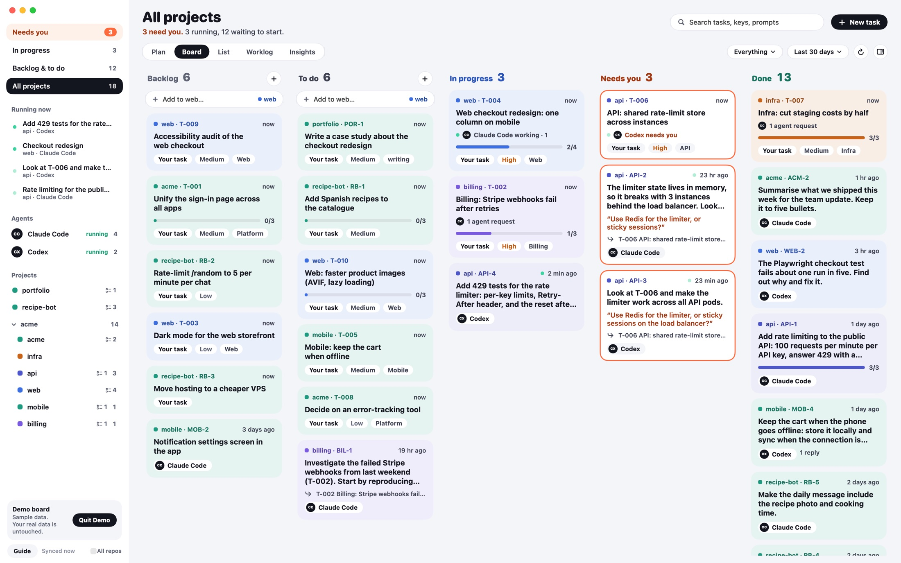

Видно, где Claude ждёт вас
Needs You собирает все сессии, которые закончились вопросом: сам вопрос, что уже сделано, и кнопка Resume.

Приложение для Mac: ваши сессии Claude Code становятся тикетами рядом с задачами по каждому проекту.

$ curl -fsSL https://aidarkazybekov.github.io/claude-board/install.sh | bash
Проверяет загрузку, ставит приложение в «Программы» и открывает его без окна безопасности. Запустите ещё раз, чтобы обновить. Посмотреть скрипт.
Живая копия демо-доски. Перетащите карточку в другую колонку, откройте её, чтобы увидеть план Claude, и посмотрите, как сессия останавливается, чтобы задать вам вопрос.
Это настоящее приложение, только без ваших проектов.
Скачать для MacУкажите этой странице папку Claude Code. Она прочитает транскрипты прямо во вкладке и покажет, что ClaudeBoard вынесет на вашу доску. Сервера нет: ничего не загружается и не сохраняется.
~/.claude/projects и нажмите Return.Откройте эту страницу на Mac, где вы работаете с Claude Code, чтобы увидеть свои цифры.
Здесь появятся ваши цифрыЗапросы, сессии, проекты, лучшая серия дней и сессии, где Claude всё ещё ждёт вашего ответа.
Посчитано по правилам приложения. Приложение ещё читает историю запросов Claude Code, поэтому может найти больше. «Скопировать мои цифры» не включает названия проектов.
Needs You собирает все сессии, которые закончились вопросом: сам вопрос, что уже сделано, и кнопка Resume.
Свой бэклог для каждого приложения. Упомяните в промпте ключ вроде T-004, и сессия привяжется к задаче.

Обычный markdown: его читают и команда, и Claude. Совместимо с Backlog.md.
--- id: T-004 title: Checkout redesign priority: P1 status: in-progress ---
Что вы просили и что сделано, по дням, с активным временем Claude.

Запросы по дням и проектам, статусы с одного взгляда и когда в неделе вы работаете с Claude.

Вставьте однострочник в Терминал. Или скачайте zip и один раз разрешите запуск в Системных настройках.
Укажите, где лежит ваш код, например ~/Developer. Каждый git-репозиторий станет проектом.
Пользуйтесь Claude Code как всегда. Доска сама обновляется каждые 20 секунд.
Нет. Оно читает ~/.claude и список сессий десктопного приложения, только на чтение. Пишет лишь в свою папку и, когда вы правите задачу, в её markdown-файл.
Нет. Ни аккаунта, ни сервера, ни аналитики. Приложение не делает сетевых запросов.
macOS 15 или новее на Apple Silicon и Claude Code: CLI или вкладка Code в десктопном приложении. На Mac с Intel можно собрать из исходников.
Приложение пока не нотаризовано. Установщик в одну строку обходит это окно. Если вы скачали zip, откройте приложение один раз, затем зайдите в Системные настройки, раздел «Конфиденциальность и безопасность», и нажмите «Всё равно открыть». В macOS 15 убрали старый способ через правый клик.
Да. Храните задачи в папке backlog/ в репозитории. Все видят одни и те же markdown-файлы через git, и Claude тоже.
Да. Откройте меню Help и выберите Try the Demo Board. Демо работает на выдуманной компании и не трогает ваши файлы.
Бесплатно, с открытым кодом, и всё остаётся на вашем Mac. Идеи и pull request'ы приветствуются.